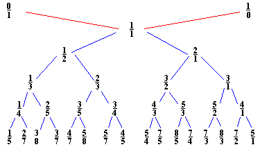

DIFFERENCE EQUATIONS & RECURSIVE RELATIONS (1801-1825)
DIFFERENCE EQUATIONS & RECURSIVE RELATIONS (1801-1825)

The Method of Differences is a practical numerical technique. It can be used to calculate exactly the numerical values of any mathematical function that can be expressed as a simple polynomial . Perceiving the simplicity and facility of the Method of Differences andthe arithmeticoperation required to execute it, Babbage realised that its principles could be very easily embodied in simplemechanical components. These insights led him, in 1821, to design anddevelop a DifferenceEngine. This differenceengine only required mechanisms foradditionrepeated manytimes over to perform the tasks Babbage hoped for . A clearer understanding of the mathematics of the Method of Differences is essential ifone is to understand Babbage's vision, and gain a better pictureof themechanics of his creation, its operations, capabilities, limitations,andthe manner in which it was expected to achieve its object.
Methods or algorithms for evaluatingfunctions or solving equations by recursion, ( the repetitive substitutionof the approximate solution of an equation back into itself to obtain a betterapproximation), had been devised as early as the late 17th century. Nevertheless, the Method of Differencesdid not become a clearly identifiable, branch of numericalmathematics until some time after Brook Taylor enunciated the famous theorem which bearshis name ( Taylor's Theorem) during the 18thcentury. By Babbage'stime, however,the Methodof Differences had been in use for a long whileand with much success forthe manual calculation of mathematical and othertypes of numerical tables.It was a well-tried and firmly established techniqueof Numerical Analysis,and its theory was well understood. What made it anideal principle for theautomatic, mechanical computation of such tables wasthat, in its use, thesame sequence of simple arithmetical operations is repeatedover and overagain. Therefore, a machine designed to imitate it only neededthose mechanismsfor repeating these same operations.
What makesthe
Method of Differencesa practical proposition for the interpolation ofthenumerical
values of functionsis a theorem which states that the nth differenceof
apolynomial of degreen is a constant, and that all its differences ofa
higherorder are zero andcan therefore be ignored. As a result, when oneis
dealingwith the evaluationof polynomials, one need only work with a finiteset
ofdifferences. One starts with the assumptionthat one is tabulatingapolynomial
functionof the nth degree. Consequentlyone may also assumethat its
nth difference is always a constant and havingbeen given or havingascertained
starting values for the function itself andits n levels of differencesone
may calculate from these, by adding them togetherin the correct orderrepeatedly,
a full table of values for the function atthe fixed and specifiedinterval,a
process comparable to Integration.
It will be
found that this procedurecan be used, in general, to generate in sequence,
a full table of values forany function, for a given, fixed interval of
values for x. In principle allone needs is the starting values of the function
and its 1st to nth differences,and the assumption that the nth difference
is a constant. Once these are specifiedthen a complete table of values
for any functionand all its differences canbe produced by iteration. If
one is tabulatinga polynomial function of the nth degree, then this will
be found to be anexact process, otherwise it willbe found that it produces
a seriesof reasonablysatisfactory approximations.

The Difference Engine was only partially completed
when Babbage
conceived the idea of another, more sophisticated machine
calledan Analytical Engine. Interestingly enough, more than one hundred
and fiftyyears after its conception, one of Babbage's
earlier Difference Engines was
eventually constructed fromoriginaldrawings by a team at London's Science
Museum. The device
performedits firstsequence of calculations in the early 1990's and returned
resultsto 31 digitsof accuracy, which is far more accurate
than the standard pocketcalculator.However, each calculation requires the
user to turn a crank hundreds,sometimesthousands of
times. Babbage
worked on his Analytical Engine from around 1830 until he died, but sadly
it was never completed. It is often said
that Babbage
was a hundred years ahead of his time and that the technology of the day
was inadequate for the task.
Friedrich Wilhelm Bessel
was a German astronomer and mathematician,best known for making the first
accurate measurement of the distance to astar. He established the
uniform system for computing star positions that is still in use.
In the investigation of problems connected with planetary perturbation,
he introduced into mathematics the Bessel
functions as the solutionsof certain differential equations. The functions
are of great importancein determining the distribution and flow of heat
or electricity through acircular cylinder and in the solution ofproblems
concerning wave theory,elasticity, and hydrodynamics.
Bessel's differential equation is as follows:
|
|
The Bessel
function can be defined as a particular solutionof Bessel's
differential equation (1), with the exponent alpha =+s and with the leading
coefficient a0=[2sG(s+1)]-1.
Here, G is used to denote the gamma function (See Gauss
below for informationon the gamma function). Using the properties
of the gammafunction,weget Bessel's
function to be:
|
|
| Js+/-1(z)=(s/z)Js (z)-/+J'(z). (3) |
| Js-1(z) + Js+1(z) =(2s/z)Js(z). (4) |
The Farey
series FN is the set of all fractionsbetween
0 and 1 written in lowest terms. The denominators of thesefractions
donot exceed N ( where N is the order of the series) and they arearranged
inorder of magintude. In 1816, Farey
published a statement in whichhe declaredthatthe middle of anythree successive
terms in the Farey
seriesis the mediantofthe other two. It was Cauchy
who eventually supplied the proof of this statement.
A proof of this statement is as follows:
Start with F1 which is 0/1,
1/1. In order toget F2, insert the mediant into
F1:
0/1,1/2, 1/1.For F3 we add two mediants: 0/1,1/3,1/2,2/3,1/1.
To get F4 we also add only 2 fractions: 0/1,1/4,1/3,1/2,2/3,3/4,1/1.
Next, add 4 fractions to get F5:0/1,1/5,1/4,1/3,2/5,1/2,3/5,2/3,3/4,4/5,1/1.
The general rule is this: to move from FN-1 to F
N add all possible mediants (that come out to be in the lowestterms)with
N in the denominator. Since forming a mediant may only increasethe denominator
weare led to think that following this rule we indeed willget the whole
of FN. To complete the proof we refer to the
Stern-Brocot tree which contains all positive fractions.So
in the process of constructing a Farey
series no fraction will be missed.

When N is prime, the rule adds N-1 fractions. In general, 
 (N) fractions are added. For all reducible fractionsm/N will have appeared
in one of the earlier series.
(N) fractions are added. For all reducible fractionsm/N will have appeared
in one of the earlier series.
The Farey
series is important in theproof of a corollary of Euclid's
algorithm. The algorithm is as follows:
For integers m and n with gcd(m,n) = 1 and m n, there exist positive integers a and b such that ma - nb = 1. The proof
relies on the properties of the Stern-Brocot
tree. For any two consecutive fractions m1/n 1
and m2/n2 in the Farey
series, m2n1- m1n2= 1. So,
depending on whether m or n is larger, locate either m/n or n/m ina Farey
series and select (asa/b) eitherthe precedingor the following fraction.
n, there exist positive integers a and b such that ma - nb = 1. The proof
relies on the properties of the Stern-Brocot
tree. For any two consecutive fractions m1/n 1
and m2/n2 in the Farey
series, m2n1- m1n2= 1. So,
depending on whether m or n is larger, locate either m/n or n/m ina Farey
series and select (asa/b) eitherthe precedingor the following fraction.
The gamma function is useful more for its relationship to other functions than as a solution by itself of some problem. It arises in simplifying the evaluation of some infinite or improper integrals and in the solution ofdifferential and difference equations arising in probability theory, statistics,mathematical physics, and engineering mathematics.
The logarithm can be defined by and integral. The gamma function can also be defined by an integral, but in a different way. It is:
 for 0<x<
for 0<x< . . |
The integral converges because the exponential makes it small
as s-> . As s->0, the
factor s^x-1 is integrable because x>0.
The gamma function is a generalization of the factorial.
In fact, it has the following properties:
| G(x+1) = x G(x). |
| G(n+1) = n! , if n is a positive integer. |
|
G
(1/2) = |
Another useful identity with respect to the gamma function is:
|
G(x) = (2x-1)/( |
This can be used to give another derivation of the gamma function on the "half-integers."
The formula for the surface area of the sphere of radius R in n
dimensions is:
| An=( 2 p n/2 R n-1)/G(n/2). |
Let V(t) measure the size of the tumor (e.g. volume, number, etc.)
|
|
|
|
|
Here r(t)= tumor growth,
alpha= retardation
constant,
beta= initial
growth or regression rate.
The sign of beta determines where the tumor grows or regresses.
The solution is given by:
|
V(t) = V0 e. |
In problems of spherical symmetry, one encounters Legendre'sdifferential
equation:
|
|
Here y= l(l+1) for some integer l >=0.
This equation is easily solved by the power series:
 zk.
zk. |
When we substitute the power series into
Legendre's differentialequation, we get:
|
k(k-1) zk-2 - (k2+k-y)
zk=0. |
We next replace k-2 by k in the first sum. The coefficients
of the like powers of z must match, so that:
|
|
 /(j!)*
((2l-2j)!)/((l-2j)!(l-j)!)*zl -2j. /(j!)*
((2l-2j)!)/((l-2j)!(l-j)!)*zl -2j.
(m=l/2 if l is even, and m=(l-1)/2 if l is odd. |
|
|